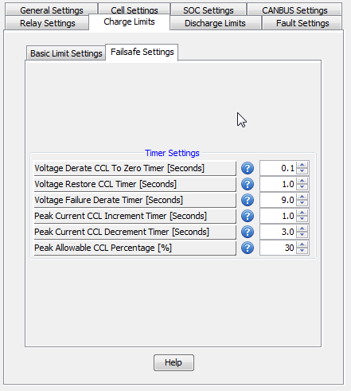

These settings are primarily technical settings for how quickly the BMS responds to various different limit related conditions. Normally these settings should not need to be changed and changing them without understanding their function could be dangerous.
| < High Temperature Limit Derating | Voltage Derate Limit to Zero Timer > |